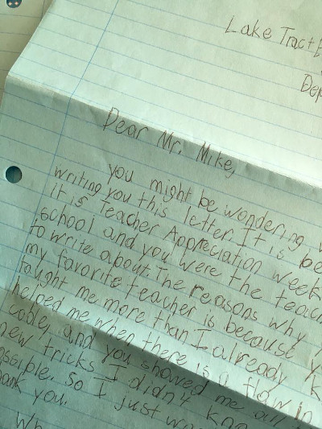

The Predicate Project: Rethinking Technology Education
Education should prepare young people for jobs that do not yet exist, using technologies that have not been invented, to solve problems of which we are not yet aware. - Richard Riley
When I was in 10th grade I was "academically floundering" - a "C" and "D" student at best. No drive to do well in school. I clearly didn't understand nor did I care about the big picture. Then I took a technology class that was given by a former metal shop teacher who had a grasp of the future. This was back in the early 1990s and the computing field wasn’t much at the time. We made an intercom – no, it wasn’t two cans and a string – rather, it was a silk-screened circuit board. We drilled all the holes, soldered the electronic components (while also learning how each of those components worked in unison to deliver a capability). The highlight for me was bringing it home and installing MY creation in my bedroom. Even today, I remember that class vividly – it had an impact, that 25 years later continues to mold my life. I have a tremendous appreciation for the teachers who are some of the earliest role models for our children. Day in and day out, they work on the educational front lines – lecturing, encouraging, mentoring, correcting – and they see it all. A good teacher can positively impact a child for life.
As a parent and technology professional, I’ve often battled with the question – are we doing enough to prepare our children for the future? My day job is a Research Director at Two Six Labs – a company that pushes the boundaries of the possible to protect the future. Our mission requires that we hire some amazingly talented people and it should come as no surprise that fueling the hiring needs of a growing organization can be as challenging as creating breakthrough technologies.
For today’s 10-year-old in 5th grade – there’s a solid seven years remaining in primary education and potentially another four (maybe more) before hitting the workforce. Adding it all up, if all these numbers hold and my math is correct, a 5th grader in 2018 would graduate high school in 2025, and college in 2029. While it seems like a long way ahead, there are things we can do today to prepare our children for the future.
The challenge is that for all of the technological innovations, we’ve actually made it harder for our children to learn about technology. We live in consumption driven times and, for most children, technology is only “seen” from the lens of a user. There is, unfortunately, an established expectation for immediate results and an equal instantaneous cloud of discouragement and frustration when something doesn’t work as expected. At our home, simply the loss of electricity is a reminder of our childrens’ lens through which they see technology. However, for every game, every Netflix stream, app, website, robotic vacuum cleaner, and drone, there is someone whose job it is to design the next big idea and someone who makes that idea come to life. We need to provide a different lens for seeing technology – from that of the creator.
In January 2016 my wife and I started Predicate Academy – a “boutique” school that teaches coding to kids ages 8 and up in a small Southern New Jersey town. Prior to Predicate, I had no teaching experience, but I’m a problem solver at heart, and I felt increasingly motivated to figure out how to “fix” technology education. My vision for Predicate was to create an environment where we change the way children learn about technology. To be honest, I had no idea how I was going to accomplish this challenge, but I’ve been dissatisfied with the void of a middle ground between Hour of Code/Scratch/Blockly and full-fledged coding. So that was my starting point. I was particularly attracted to the work being done by the Raspberry Pi Foundation – they use many of the same “tools of the trade” – Linux, command line, modern programming languages - that are used in the field. And the devices are only $35USD, so everybody can own one, even if coding isn’t their thing. So, we bought Pis, lots of Pis! Since 2016, we’ve put more than 1000 Pis out in the wild.
An interesting paradox at Predicate is that while we focus on education, our aspiring innovators do not see Predicate Academy as a school. Why not? Frequent responses are: “it’s coding”, “we make games”, “it’s fun”, “there is no homework”. I believe I’ve successfully exploited this belief by being able to bury some dense mathematical and physics concepts in the context of “coding”. Computer Science is multidisciplinary field with roots in Mathematics and Physics, and going back to its roots, is rich with applied educational value. In any given week some of our classes would be converting between seconds and milliseconds, writing algebraic formulas to make a LED pulse, computing Euclidean distance, and even understanding the frequency spectrum.
But teaching is incredibly hard work! While I only hold a few classes a week at Predicate, a technical glitch can wreak chaos on a class. Through it all, though, one of the most unexpected surprises is to see the weekly progression of our aspiring innovators. Their curiosity and excitement is equally contagious – far more than I would have ever estimated. I have a handful of kids that have assembled a wealth of command line foo and a few others that have mastered nmap and ssh (so much so I had to change our in-class code deployment processes). We have some very talented future technologists and it’s been a true honor to be a part of their educational journey.

I genuinely believe that with every passing class, we are becoming increasingly aware of better ways to deliver technology education. Direct feedback from our innovators and their parents has offered continued motivation to see our vision through. In many ways, I’m reliving an educational experience I had many years ago and it’s been great to see the impact that Predicate has had in our community.
-
Predicate has allowed us to see excitement in our budding inventor – more than any other extracurricular activity he has tried! Drew may be quiet while concentrating in coding class, but then he comes home and runs to set up the latest project declaring, “You HAVE to see this,” to the whole family! What an amazing and smart way to spread the love of coding and computers to our future inventors, scientists and leaders!
-
Kevin’s experience at Predicate Academy has been amazing! He has been able to apply what he has learned in his Journey sessions to create a video game in his high school’s Computer System and Video Game Design class. Kevin designed a fully interactive game that required coding and creating sprites, sounds, backgrounds, objects, controllers, and levels. The game has three lives and secret Easter Egg levels. If a player passes all the levels, the game can provide up to thirty minutes of entertainment! We are thrilled that Kevin is a part of something so special at Predicate Academy! Not only is he gaining valuable real-life skills to take into the classroom and world, but Predicate has given him the knowledge and confidence to share these skills with his high school classmates!
-
Some time ago, Ryan decided that he wanted to be a coder when he grew up. I knew he liked playing video games and Minecraft mods, so I guess that’s where he got the idea that he wanted to be a coder. With the help of a junior programming book, we tried to do a little programming at home, but I was not very successful helping him to understand the concepts or make it applicable to his interests. We came across a Facebook mention of a Predicate Academy open house and went to check it out. Mr. Mike showed us the Python programming and physical computing interaction with the Raspberry Pi and Ryan was immediately hooked. The computing projects at Predicate Academy provide him with just the right mix of challenge, skill development and fun. Ryan looks forward to going to class every week and he can’t wait to continue learning how to code at Predicate Academy!
While we have been teaching our aspiring innovators how to code, we’ve also been studying how children respond to these concepts (and, well, education in general). Painting in broad strokes, a number of consistent themes surfaced in our classes:
-
Most kids (at least in our area) are familiar with coding prior to coming to Predicate, but it is often limited to Computer Science Education Week and the Hour of Code.
-
Typing skills are wildly varying and navigation around special keys (especially those used in most coding languages) is a challenge. I’m always amused when kids come in and ask: “Mr. Mike, are we going to do any typing today in coding class?”.
-
Familiarity on a topic can bias attention. I’ll deem this “Minecraft Fatigue” – a growing number of 12-year olds are increasingly disinterested in all things related to Minecraft. Want to demonstrate loops and 3-dimensional spaces? It better not be done in Minecraft.
-
Kids “think” they can multitask in front of a computer. That is, they think they can surf the web while also following along to a technical concept presentation. In general, I can have about 10 minutes of attention before the multitasking gears kick in.
Over the last three years, we have established a fairly decent understanding of our limits –technically, mentally, even emotionally – that allow us to shape technology education in a way that keeps the classes engaged while also ensuring they are actively learning new concepts. But there is a consistently large void in meeting the expectations of children who are quick to default into “consumption mode”. Why would they be interested in coding “pong” when they can go home and play Fortnite? This is a regular barrier for success at Predicate and I’d argue it hampers progression for technology education in general. Sustaining motivation in our kids is a key factor for them to stay engaged. I do not see this as an education problem but rather a technology problem – complexity that can be achieved through abstraction.
Over the past year, we’ve been working on an instructional platform that teaches the basics of coding through the creation of arcade games. The aptly named “Predigame” was originally developed by @Gabe-Linux as a way to introduce text-based coding to our younger innovators. Their response fueled continued work on the project. Today, Predigame is minimalistic platform and makes extensive use of coding abstractions to present a "low lift" interface allowing aspiring coders to familiarize themselves with computational thinking while downplaying many of the nuances that come with giving instructions to a computer. Holding true to form, Predigame seeks to offer a coding experience through the lens of a technologist. Specific emphasis is given towards software design, modern programming languages, command line execution, error debugging - skills that are directly transferrable in any journey to becoming a software engineer.
We’re really excited to offer Predigame predigame.io to the open source community as a solution to address the needs of intermediate coders in search of a middle ground between Hour of Code/Scratch/Blockly and full-fledged coding. Predigame requires minimum computing resources and has been tested on Microsoft Windows 10, macOS 10.12+ (Sierra and High Sierra), and Raspberry Pi Model 2B/3B (Raspbian Jessie and Stretch).
Give it a shot and let’s change the way our children learn about technology!
Michael Orr
Parent, Technologist, Sunday Sound Guy, Teacher